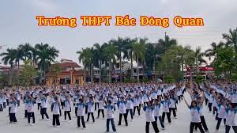
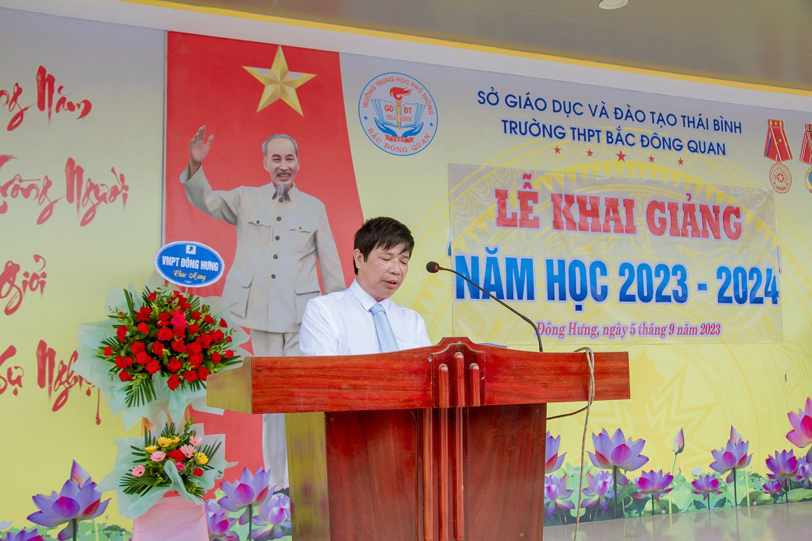

HOẠT ĐỘNG THỂ DỤC GIỮA GIỜ TẠI THPT BẮC ĐÔNG QUAN
 Sinh thời, Chủ tịch Hồ Chí Minh kính yêu của chúng ta luôn đề cao vấn đề tập thể dục, rèn luyện sức khỏe. Bác viết: “Giữ gìn dân chủ, xây dựng nước nhà, gây đời sống mới, việc gì cũng cần có sức khỏe mới làm thành công”. Điều này cho thấy tầm quan trọng của vận động đối với sức khỏe con người, có sức khỏe là có tất cả. Từ ý nghĩa đó, ban giám hiệu trường THPT Bắc Đông Quan luôn chú trọng đổi mới hoạt động thể dục giữa giờ nhằm giúp giáo viên có những thời gian vận động thoải mái, cơ thể khỏe mạnh, tạo môi trường sinh hoạt lành mạnh. Đặc biệt, tính tự giác, sự tự tin của thầy cô được phát huy, từ đó góp phần nâng cao chất lượng giáo dục.
DIỄN VĂN KHAI GIẢNG NĂM HỌC 2023-2024
 Lời đầu tiên cho phép tôi được gửi tới quý vị đại biểu, các thầy cô giáo và các em lời chào trân trọng, lời chúc sức khỏe và thành công. Tôi cũng xin được thay mặt quý vị đại biểu, các thầy cô và các anh chị học sinh khối 11 và khối 12 nồng nhiệt chào đón 630 học sinh khóa 10, K56 niên khóa 2023-2026. Chúc các em có 1 khóa học ước mơ và thành đạt Thưa toàn thể các thầy cô giáo và các em học sinh thân mến. Chào đón năm học mới 2023-2024 cũng là dịp để thầy và trò chúng ta nhìn lại một năm học vừa qua với những thành công và hạn chế để phấn đấu vươn lên hoàn thành tốt nhiệm vụ năm học với 1 kỳ vọng mới và khí thế mới. Thay mặt các thầy trong BGH nhà trường tôi xin được điểm lại nét chính trong năm học 2022-2023 Điểm nhấn của năm học 2022-2023 là đầu tháng 11 năm 2022 chúng ta đã chính thức đưa công trình nhà học 3 tầng mới vào sử dụng sau hơn 1 năm thi công. Với sự đầu tư của nhà nước cùng với việc xã hội hóa giáo dục của toàn xã hội chúng ta khẳng định hiện nay chúng ta đã có một cơ ngơi, quang cảnh nhà trường đẹp và hiện đại nhất mấy thập kỷ qua. Với tiền đề đó cùng với sự vượt khó vươn lên của đội ngũ các nhà giáo, sự chăm chỉ học tập của các em học sinh, đặc biệt là sự quan tâm chỉ đạo của các cấp, các ngành, sự đồng hành của các bậc phụ huynh chúng ta đã cơ bản hoàn thành xuất sắc nhiệm vụ năm học